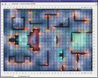
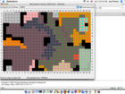
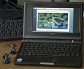

{kind=link}


{kind=link}
{kind=link}
{kind=link}
on Solaris
on Windows
on Linux
on Mac OS-X
on the EeePc
on Android
Map Explorer is a freely available tool to explore Line-of-Sight (LOS) on maps for the D&D Miniatures Skirmish game.
| 2010-07-04 | Fixed the problem in the online version (wrong php version). |
| 2010-07-03 | I just noticed that the online version does not work any more. I'm investigating the problem. |
| 2008-05-02 | I'm working on an online version of MapExplorer. This is far from finished, but you can check it out here. |
| 2008-04-25 | The rules for forest have changed. Note that Map Explorer still uses the old rules. |
| 2007-11-19 | Updated the test version. |
| 2007-02-28 | Diagonal walls support still proceeding at a snail's pace. For the daring, there's a preview here. |
| 2007-01-02 | I currently have almost no time to work on map explorer, so implementing diagonal
walls for the Frostfell Rift maps will have to wait. 20070102 is just a small patch to remove the hardcoded Vassal mod file name. You can now set the name of the Vassal mod file in mapexplorer.properties. For example, to continue using the older mod file, add
mapexplorer.images=DDM_1-11-1.mod to your mapexplorer.properties.
The default name is now DDM_1-11-2.mod.
|
| 2006-12-05 | Version 20061205-1 can now display a map image instead of the somewhat blocky graphics. This looks much nicer, but the terrain features may be harder to see. To use this you need to download the current DDM Mod for the Vassal engine and place it in the Map Explorer directory. The file should be named DDM_1-11-1.mod. (download link). |
| 2006-09-19 | Here is the Underground Grotto map from the Gargantuan Black Dragon. Thanks to Jai for contributing this. |
|  | |
|
 |  | |
| Version 20061205 on Solaris |
Version 20051209 on Windows |
Version 20051201 on Linux |
Version 20051224 on Mac OS-X |
Version 20071119-test on the EeePc |
Online Version on Android |
You need a Java 5 Runtime Environment to run Map Explorer. One way to check this is to enter
java -version
on the command line. It should print something like this:
java version "1.5.0_04"
Java(TM) 2 Runtime Environment, Standard Edition (build 1.5.0_04-b05)
Java HotSpot(TM) Client VM (build 1.5.0_04-b05, mixed mode, sharing)
The version number in the first line of the output must at least be 1.5.xxx. If it is 1.3.xxx or 1.4.xxx you need a more recent Java version.
Download the current version of Map Explorer: MapExplorer-20070102. (Version history, source)
Unzip the archive. It will create a Directory MapExplorer
containing the program and the maps.
On Windows Systems, you can start Map Explorer by double-clicking
MapExplorer.bat.
On UNIX or Linux, user the mapexplorer shell script.
Known bugs and possible improvements and future extensions: TO-DO list.
If you'd like to make your own maps, here's a definition of the map file format.